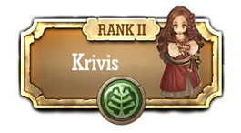
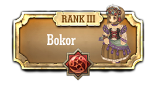
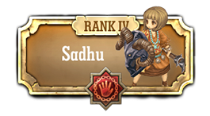
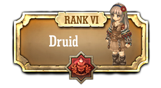
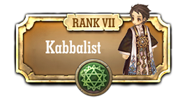
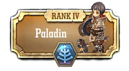
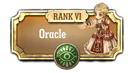

Classe Clerico

Clerico cura e protege os aliados através das bênçãos da deusa, enquanto derruba seus inimigos com golpes poderosos

Krivis são padres que usam o fogo divino para ajudar aliados recuperar ou para causar dano enorme para os inimigos.

Bokors usam as habilidades de vodu para ressuscitar os mortos ou amaldiçoar seus inimigos para atacá-los de longe.

Um Sadhu pode usar a sua alma aos inimigos de assalto com ataques invisíveis ou transmitir os seus poderes a outros jogadores.
Pardoners são clérigos que não têm vergonha de aumentar sua riqueza através da bênção da deusa.

Druidas são clérigos que usam o poder da natureza .
eles controlam plantas para ajudar aliados , ou transformar em monstros para usar habilidades do monstro .
eles controlam plantas para ajudar aliados , ou transformar em monstros para usar habilidades do monstro .

Kabbalists são os clérigos que praticam a magia antiga conhecida como Cabala.
Eles querem apoiar seus aliados com poder infinito ou analisar nomes dos inimigos para ajudá-los em combate.
Eles querem apoiar seus aliados com poder infinito ou analisar nomes dos inimigos para ajudá-los em combate.

Os Sacerdotes são clérigos que dão bênçãos e ressuscitam os mortos com seus poderes sagrados
Dievdirbys pode esculpir e colocar estátuas sagradas.
suas estátuas pode proteger aliados ou inimigos de ataque.
suas estátuas pode proteger aliados ou inimigos de ataque.

Paladinos usam seu poder sagrado para proteger aliados e vencer os inimigos através das bênçãos da deusa.
Monges são clérigos que treinam nas artes marciais através da bênção da deusa.

Oráculos são clérigos que possuem previsão.
eles podem prever ou interferir com os ataques de um inimigo e determinar o seu destino .
eles podem prever ou interferir com os ataques de um inimigo e determinar o seu destino .
Plague Doctors são a classe de tipo clérigo que a alta especialização na cura de anormalidades dos aliados ou queime a dos inimigos.